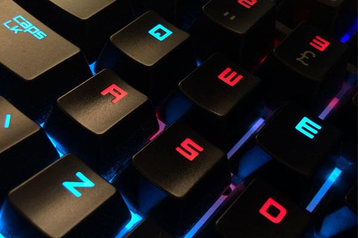

Beaucoup n’osent pas monter leur ordinateur eux même et préfèrent l’acheter tout fait, prêt à fonctionner. Cependant monter son propre ordinateur présente de nombreux avantages et n’est pas si compliqué qu’on le croit. Le premier avantage étant le prix, un ordinateur monté sois même coutera toujours beaucoup moins cher qu’un ordinateur déjà monté, de plus vous pouvez choisir un ordinateur qui corresponde réellement à vos besoins et qui en cas de défaillance d’un composant pourra être rapidement remplacé par le nouveau composant de votre choix ! Dans ce premier des trois articles consacrés au montage d’un ordinateur, nous commencerons par savoir à qui ce genre de projet est destiné et quels sont ses avantages et inconvénients. Dans un deuxième nous verrons comment choisir des composants qui correspondent à nos besoins et enfin nous verrons les conseils qui vous permettrons de monter votre propre machine sans difficultés !
Aujourd’hui la très grande majorité des français possèdent un ordinateur fixe, que ce soit pour travailler, remplacer une console de jeux ou les deux à la fois. Le confinement à très grandement augmenté les ventes d’ordinateurs, la Fnac ou Darty ont vendu cinq fois plus d’ordinateurs que d’habitude durant le confinement, le Leclerc dans lequel je travaille arrive au même résultat. Le montage ‘maison’ d’un ordinateur fixe est à la portée de tout le monde, même pour les personnes débutant dans l’informatique. En suivant ce guide vous aurez tous les bons conseils qui vous permettrons de vous lancer dans le montage et la configuration de votre pc. Une dernière chose que vous devez savoir avant de vous lancer, c’est que lors du montage de votre machine, si vous abimez un composant celui-ci pourrait ne pas être remboursé. Pour se faire des alternatives existes, certains sites comme Top Achat, LDLC ou encore PCspecialist vous montent la configuration de votre choix pour quelques dizaines d’euros avec la garantit que celui-ci fonctionnera le jour de la livraison. Cela augmentera légèrement le prix de votre ordinateur mais restera toujours bien moins couteux qu’un ordinateur acheté tout fait par une marque !
La suite dans le prochain article consacré cette fois ci au choix des composants.
